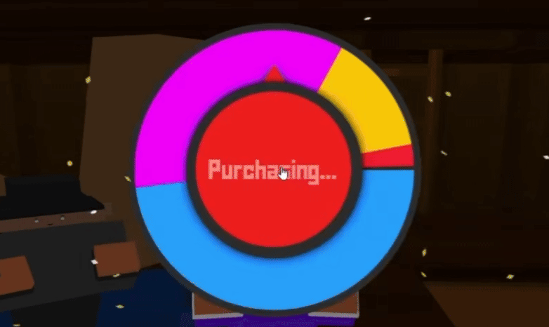
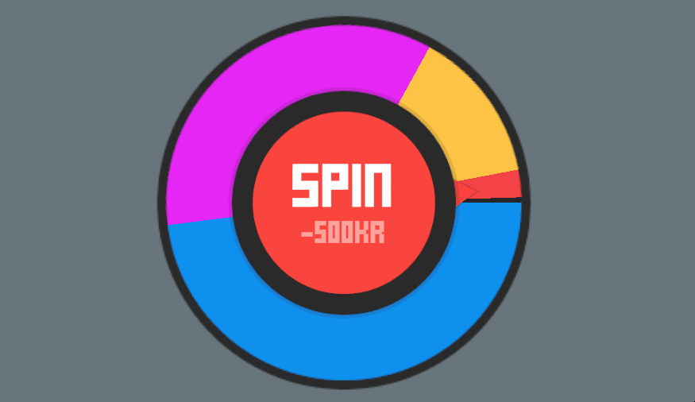
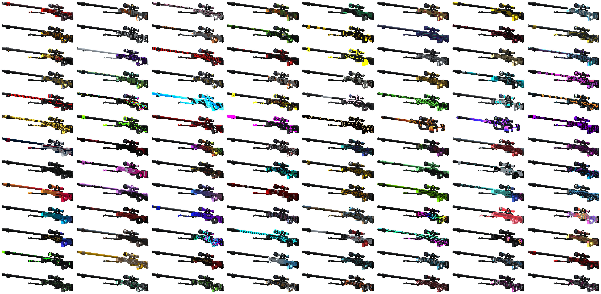
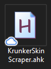
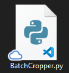
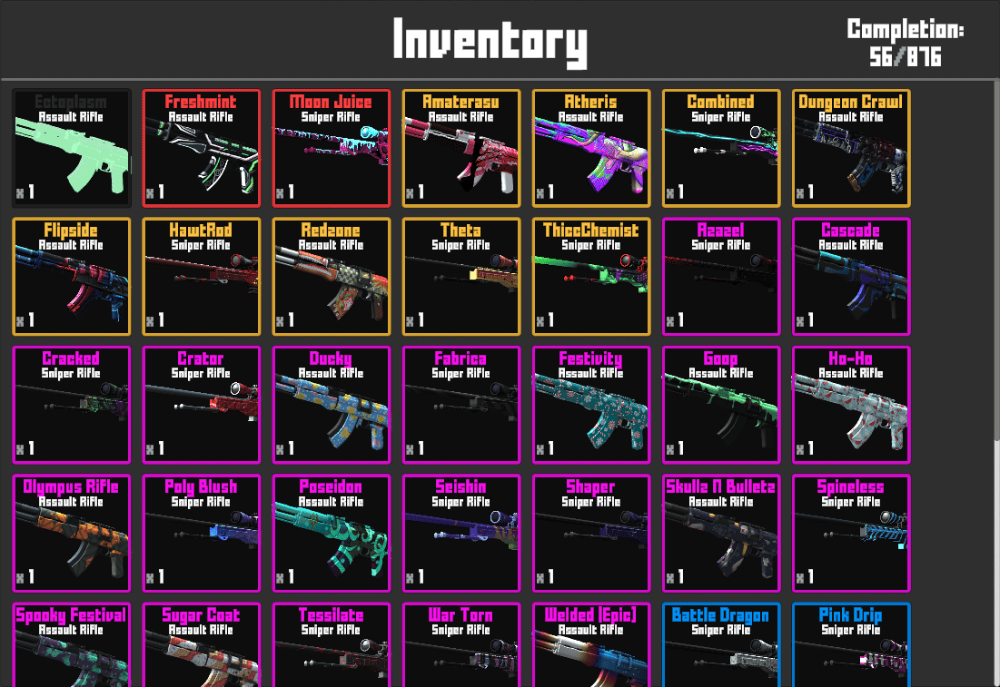
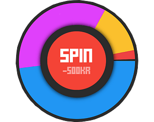

Development Journey
{{page.project}} is a full browser-playable WebGL recreation of the Krunker.io spin system, but with infinite currency and a huge collection of 1000+ available skins. It’s the second version of the Krunker spin simulator, expanding my original prototype into a polished, optimized project.
Developed together with Simommes, who handled testing, marketing, and quality control, this version focuses heavily on capturing the exact feel of the real Krunker.io spinner. The animations, timing, skin reveals, and visual cues are nearly indistinguishable from the real thing.
Core Challenge
The single most important goal was game feel. A huge amount of time went into matching:
- Timing of the spin
- Spin acceleration and deceleration
- The sound of the spinner
- Skin reveal moment
- Overall animation rhythm
- The button feel
Original
Recreation


This required extensive experimentation inside Unity’s Animator system. Dozens of small tweaks like easing curves, animator transitions, frame timings, and state blends, were adjusted until the simulator felt identical to Krunker.io. Getting this right is one of the achievements I’m most proud of.
The RNG behind the spins is weighted exactly like Krunker.io, so rare skins stay rare.
Scraping 1000+ Skins (Without an API)
Krunker.io doesn’t provide an API to fetch skins, so I built a complete custom scraping pipeline.

AutoHotkey Scraper
I wrote a specialized AutoHotkey script that:
- Opens each weapon skin one by one
- Rotates the weapon to a specific angle using precise mouse movements
- Takes a screenshot of a defined region of the screen
- Automatically names the screenshot using the weapon type, weapon name, and skin data
- Cropping
- Repositioning
- Centering
- Exporting
- Automatic sorting for clean organization
- Visual skin previews using the processed images
- Instant browsing without lagging
Each weapon category required its own set of rotation angles to mimic how they appear during a real Krunker spin.

Automated Image Processing with Script-Fu
The raw screenshots then went through a custom GIMP Script-Fu plugin I wrote. This plugin batch-processed every skin:
The result are perfectly cleaned, uniform textures ready for Unity, without manually editing thousands of images!
This scraping + batch‑processing system is the second thing I’m most proud of in the entire project.

Inventory System
With over a thousand skins, the inventory needed to be efficient and fast. Key features:

Browser WebGL Build
The project is built entirely in Unity and exported to WebGL, making it fully playable in the browser with no downloads. Despite the size of the skin library, the simulator runs smoothly and even works well on mobile browsers.

{{page.project}}
Itch.io PageOverview
{{page.description}}
Used Skills/Tools
Unity Engine
Core development & animation
C# Programming
Logic, weighted RNG, inventory
AutoHotkey
Automated skin scraping
GIMP Script-Fu
Batch image editing plugin
Itch.io
WebGL hosting and distribution